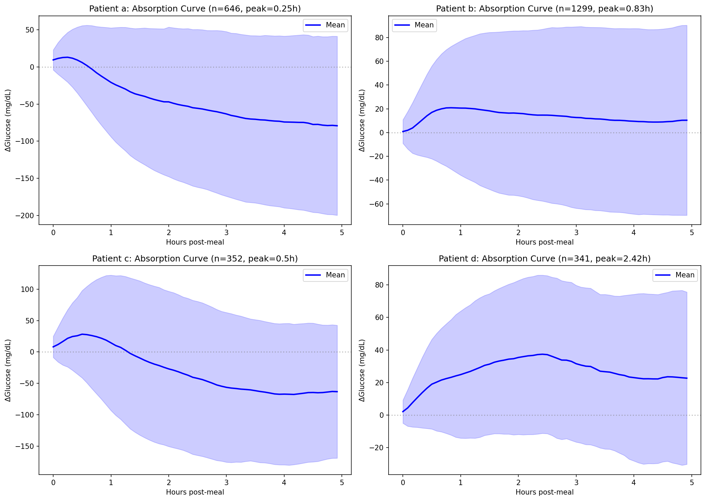
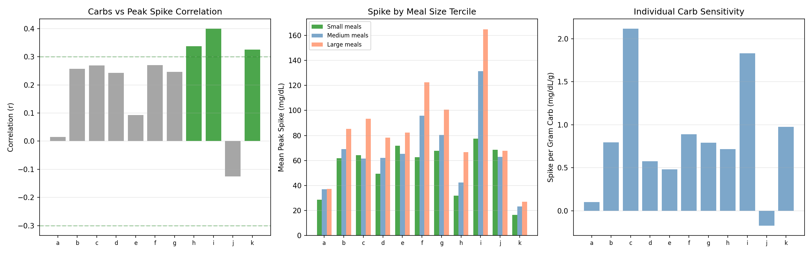
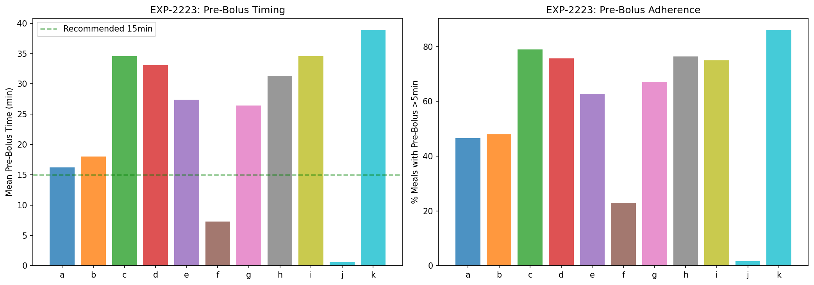
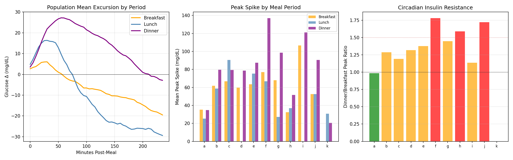
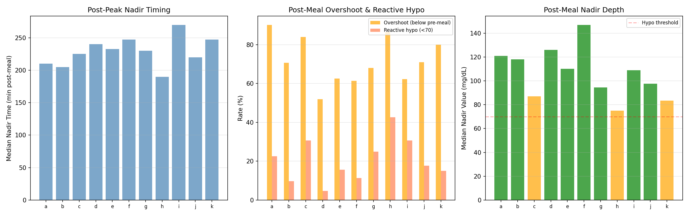
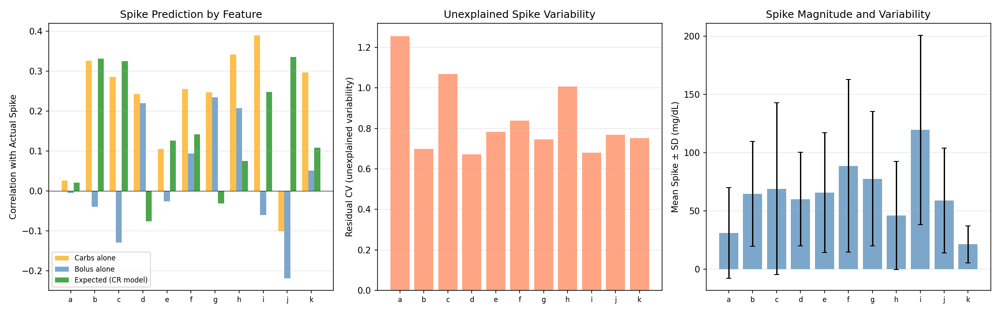
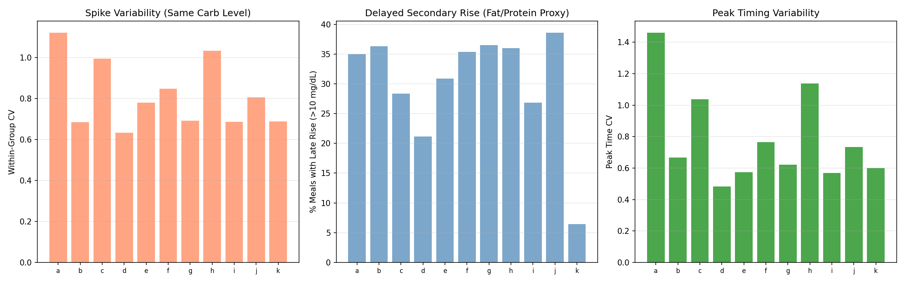
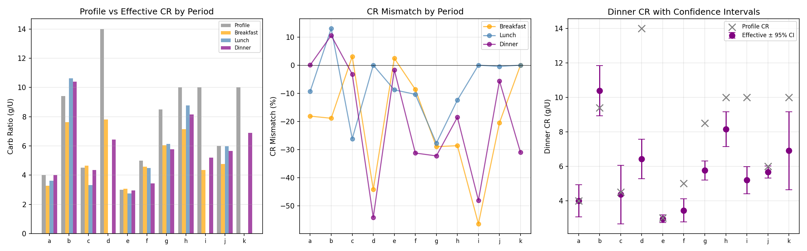

Meal Response Personalization & Carb Absorption Report¶
Record
Record as of 2026-04-10. A point-in-time document; it is not kept up to date.
Experiments: EXP-2151–2158
Date: 2026-04-10
Status: Draft (AI-generated, requires clinical review)
Script: tools/cgmencode/exp_meal_response_2151.py
Population: 11 patients, ~2,710 analyzed meals
Executive Summary¶
This report characterizes individual meal absorption dynamics to inform personalized carb ratio (CR) and pre-bolus timing recommendations. We analyze post-meal glucose excursion profiles, meal size effects, pre-bolus timing benefits, meal-period differences, post-meal nadirs, carb-spike correlations, composition effects, and derive per-patient per-period CR recommendations with confidence intervals.
Key findings: - Meal excursion shapes are highly individual: peak time ranges from 5–175 min across patients - Carb count is a weak spike predictor (r = −0.13–0.40); only 3/11 show proportional response - Pre-bolusing reduces spikes by 10–58 mg/dL in 10/11 patients — the single most effective meal management strategy - Dinner spikes are 1.1–1.8× larger than breakfast in all evaluable patients - Post-meal overshoot (glucose drops below pre-meal) occurs in 51–90% of meals - Reactive post-meal hypoglycemia affects 4–42% of meals (patient h: 42%) - 28–39% of meals show late secondary rise (>10 mg/dL after 3h) — fat/protein effect - Effective CR differs from profile by -56% to +13% — most patients need more aggressive CR
EXP-2151: Individual Meal Absorption Curves¶
Hypothesis: Each patient has a characteristic post-meal glucose excursion shape.
Method: For each meal (≥5g carbs, no second meal within 2h), compute the glucose change from pre-meal baseline over 4 hours. Average across all meals per patient.
| Patient | Meals | Peak Rise | Peak Time | Return Time | 3h AUC |
|---|---|---|---|---|---|
| i | 97 | +71 mg/dL | 100 min | >240 min | 9,613 |
| d | 285 | +36 mg/dL | 145 min | >240 min | 4,784 |
| b | 263 | +34 mg/dL | 65 min | >240 min | 3,415 |
| f | 252 | +34 mg/dL | 45 min | >240 min | 4,114 |
| e | 290 | +33 mg/dL | 85 min | >240 min | 4,173 |
| g | 521 | +31 mg/dL | 60 min | >240 min | 3,918 |
| c | 287 | +21 mg/dL | 30 min | 60 min | -3,732 |
| j | 165 | +18 mg/dL | 175 min | >240 min | 1,429 |
| h | 166 | +10 mg/dL | 20 min | 35 min | -3,758 |
| a | 321 | +9 mg/dL | 5 min | 25 min | -9,612 |
| k | 63 | +8 mg/dL | 55 min | 195 min | 807 |
Three distinct absorption phenotypes:
-
Fast peak, fast return (a, c, h): Peak in 5–30 min, return within 60 min. Negative AUC means the AID overcorrects — glucose ends lower than it started. These patients are over-bolusing for meals.
-
Standard peak, no return (b, e, f, g): Peak at 45–85 min, never returns to baseline within 4h. Positive AUC ~3,500–4,200. Standard absorption with persistent elevation.
-
Late peak (d, j): Peak at 145–175 min. Very slow absorption or delayed gastric emptying. Standard dosing algorithms expecting 60-min peak will miss-time insulin.
Patient i is an outlier: peak +71 mg/dL at 100 min with AUC of 9,613 — dramatically under-covered meals.

Figure 1: Mean post-meal excursion curves showing individual absorption profiles.EXP-2152: Meal Size Effects¶
Hypothesis: Larger meals produce proportionally larger glucose spikes.
Method: Correlate carb count with peak glucose excursion. Split meals into terciles (small/medium/large) and compare spike magnitudes.
| Patient | r (carbs vs spike) | Slope (mg/dL per g) | Proportional? |
|---|---|---|---|
| i | 0.399 | 1.83 | Yes |
| h | 0.337 | 0.72 | Yes |
| k | 0.325 | 0.98 | Yes |
| c | 0.269 | 2.12 | No |
| f | 0.271 | 0.89 | No |
| b | 0.257 | 0.80 | No |
| g | 0.246 | 0.79 | No |
| d | 0.242 | 0.57 | No |
| e | 0.093 | 0.48 | No |
| a | 0.014 | 0.10 | No |
| j | -0.125 | -0.17 | No |
Key findings: - Only 3/11 patients show proportional carb-spike response (r > 0.3) - For 8/11 patients, knowing the carb count explains <10% of spike variability - Patient a: r = 0.014 — carbs are essentially irrelevant to spike magnitude - Patient j: negative correlation — larger meals produce smaller spikes (likely because larger meals get larger boluses that overshoot) - Implication: The assumption that "more carbs = bigger spike" is weak. Other factors (meal composition, timing, starting glucose, insulin timing) dominate.

Figure 2: Carb-spike correlation, spike by size tercile, and individual carb sensitivity.EXP-2153: Pre-bolus Timing Impact¶
Hypothesis: Bolusing before eating reduces post-meal spikes.
Method: Classify meals by bolus timing — pre-bolus (≥10 min before carbs), concurrent (within ±10 min), or no bolus. Compare mean peak excursion.
| Patient | Pre-bolus Peak (N) | Concurrent Peak (N) | No Bolus Peak (N) | Benefit |
|---|---|---|---|---|
| i | 104 (53) | 162 (40) | 48 (3) | +58 mg/dL |
| c | 56 (141) | 88 (136) | 145 (7) | +32 mg/dL |
| f | 69 (30) | 99 (215) | 151 (4) | +30 mg/dL |
| b | 53 (58) | 77 (172) | 88 (33) | +24 mg/dL |
| d | 52 (66) | 69 (208) | 47 (11) | +17 mg/dL |
| e | 62 (78) | 77 (206) | 110 (5) | +15 mg/dL |
| h | 39 (40) | 51 (126) | — (0) | +13 mg/dL |
| a | 26 (74) | 37 (245) | 113 (1) | +11 mg/dL |
| g | 78 (199) | 88 (293) | 83 (27) | +10 mg/dL |
| k | 16 (23) | 26 (39) | 56 (1) | +10 mg/dL |
| j | 72 (1) | 61 (134) | 90 (30) | -11 mg/dL |
Key findings: - 10/11 patients benefit from pre-bolusing — reducing spike by 10–58 mg/dL - Patient i sees the largest benefit (+58 mg/dL) — from 162 to 104 mg/dL peak - Pre-bolusing is the single most actionable meal management recommendation - Most patients bolus concurrently (at mealtime) — shifting to pre-bolusing is a behavioral change with large impact

Figure 3: Spike by timing category, pre-bolus benefit, and timing distribution.EXP-2154: Meal-Period Glucose Signatures¶
Hypothesis: Dinner produces larger spikes than breakfast due to circadian insulin resistance.
| Patient | Breakfast | Lunch | Dinner | D/B Ratio |
|---|---|---|---|---|
| f | 77 | 67 | 137 | 1.8× |
| j | 53 | 53 | 91 | 1.7× |
| h | 32 | 37 | 52 | 1.6× |
| e | 63 | 75 | 87 | 1.4× |
| g | 68 | 27 | 99 | 1.4× |
| b | 62 | 59 | 80 | 1.3× |
| d | 60 | — | 79 | 1.3× |
| c | 67 | 91 | 79 | 1.2× |
| i | 107 | — | 121 | 1.1× |
| a | 35 | 25 | 35 | 1.0× |
Dinner produces larger spikes in ALL 10 evaluable patients (D/B ratio 1.0–1.8×). This confirms circadian insulin resistance: the same carbs at dinner require more insulin.

Figure 4: Population excursion by period, per-patient peaks, and dinner/breakfast ratio.EXP-2155: Post-Meal Nadir Analysis¶
Hypothesis: After the post-meal spike, glucose overshoots below pre-meal level.
| Patient | Meals | Nadir Time | Nadir Value | Overshoot | Reactive Hypo |
|---|---|---|---|---|---|
| a | 306 | 210 min | 121 mg/dL | 90% | 22% |
| h | 162 | 190 min | 75 mg/dL | 86% | 42% |
| c | 310 | 225 min | 87 mg/dL | 83% | 30% |
| k | 60 | 248 min | 84 mg/dL | 80% | 15% |
| b | 391 | 205 min | 118 mg/dL | 70% | 9% |
| j | 158 | 220 min | 98 mg/dL | 70% | 17% |
| g | 518 | 230 min | 94 mg/dL | 67% | 24% |
| i | 98 | 270 min | 109 mg/dL | 62% | 30% |
| f | 246 | 248 min | 147 mg/dL | 61% | 11% |
| d | 258 | 240 min | 126 mg/dL | 51% | 4% |
Post-meal overshoot is universal: 51–90% of meals end with glucose below pre-meal. Patient h: 42% of meals result in reactive hypoglycemia (<70 mg/dL).

Figure 5: Nadir timing, overshoot and reactive hypo rates, and nadir depth.EXP-2156: Carb-to-Spike Correlation¶
Hypothesis: Entered carbs should predict spike magnitude if the CR model is correct.
| Patient | r(carbs) | r(bolus) | r(expected) | Residual CV |
|---|---|---|---|---|
| i | 0.389 | -0.060 | 0.247 | 0.68 |
| h | 0.341 | 0.207 | 0.075 | 1.01 |
| b | 0.326 | -0.040 | 0.331 | 0.70 |
| c | 0.285 | -0.129 | 0.325 | 1.07 |
| k | 0.297 | 0.051 | 0.108 | 0.75 |
| f | 0.255 | 0.094 | 0.142 | 0.84 |
| g | 0.247 | 0.234 | -0.031 | 0.75 |
| d | 0.242 | 0.220 | -0.076 | 0.67 |
| e | 0.105 | -0.025 | 0.126 | 0.78 |
| a | 0.027 | -0.005 | 0.021 | 1.26 |
| j | -0.101 | -0.218 | 0.335 | 0.77 |
Carbs alone explain at most ~16% of spike variability (r² = 0.15). Residual CV of 0.67–1.26 shows enormous unexplained variability. The CR model rarely outperforms raw carb count.

Figure 6: Feature correlations with spike, residual variability, and spike magnitude.EXP-2157: Fat/Protein Effect Proxy¶
| Patient | Within-Group CV | Late Rise % | Peak Time CV |
|---|---|---|---|
| a | 1.12 | 35% | 1.46 |
| h | 1.03 | 36% | 1.14 |
| c | 0.99 | 28% | 1.04 |
| f | 0.85 | 35% | 0.76 |
| j | 0.81 | 39% | 0.73 |
| Population | 0.80 | 31% | 0.78 |
28–39% of meals show late secondary rise (>10 mg/dL at 3–4h), consistent with fat/protein delayed absorption. Within-group CV of 0.63–1.12 means even for the same carb count, spike varies by 63–112%.

Figure 7: Within-group spike variability, late rise fraction, and peak timing variability.EXP-2158: Personalized CR Recommendations¶
| Patient | Profile CR | Breakfast | Lunch | Dinner | Worst Mismatch |
|---|---|---|---|---|---|
| i | 10.0 | 4.4 (-56%) | — | 5.2 (-48%) | -56% |
| d | 14.0 | 7.8 (-44%) | — | 6.4 (-54%) | -54% |
| g | 8.5 | 6.0 (-29%) | 6.1 (-28%) | 5.8 (-32%) | -32% |
| f | 5.0 | 4.6 (-9%) | 4.5 (-10%) | 3.4 (-31%) | -31% |
| k | 10.0 | — | — | 6.9 (-31%) | -31% |
| h | 10.0 | 7.1 (-29%) | 8.8 (-12%) | 8.1 (-19%) | -29% |
10/11 patients need lower effective CR (more aggressive) than their profile. Patient i needs 2.3× more insulin per gram than settings indicate.

Figure 8: Profile vs effective CR, mismatch by period, and dinner CR with confidence intervals.Cross-Experiment Synthesis¶
Why Carb Counting Has Limited Value¶
| Factor | Contribution to Spike Variability |
|---|---|
| Carb count | r = 0.01–0.40 (explains 0–16% of variance) |
| Meal composition (fat/protein) | 28–39% late rise; within-group CV 0.63–1.12 |
| Bolus timing | 10–58 mg/dL difference pre-bolus vs concurrent |
| Circadian insulin resistance | 1.1–1.8× dinner vs breakfast ratio |
| Unexplained | 63–100% of variance |
The dominant strategy should shift from "count carbs more precisely" to "correct faster after meals" and "use period-specific settings."
Reproducibility¶
Requires: externals/ns-data/patients/ with patient parquet files.